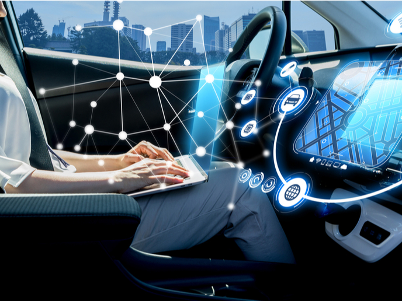
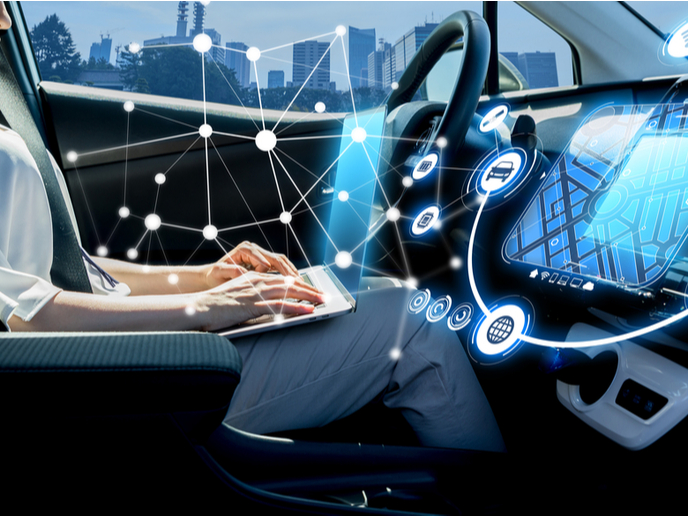

เทคโนโลยี
โลกไร้พรมแดนที่พัฒนาไปอย่างไม่มีสิ้นสุด ในอนาคตจะเกิดสิ่งใหม่ ๆ มากมายที่คาดไม่ถึง มีการทำกิจกรรมต่าง ๆ บนโลกออนไลน์ให้เสมือนโลกจริงมากขึ้น ความสะดวกในการใช้งานก็มีมากขึ้น อุปกรณ์ต่าง ๆ ก็ทันสมัย ดังนั้นหากสามารถปรับตัวตามเทรนด์หรือนำเทรนด์ตอบสนองต่อความต้องการของผู้บริโภคได้ จะทำให้ได้เปรียบกว่าคู่แข่งได้อย่างง่ายดายแน่นอน
1. Internet of Things (IoT)
Internet of Thing (IoT) คือการที่อุปกรณ์ต่าง ๆ นั้นถูกเชื่อมต่อกับอินเทอร์เน็ต เช่น แอปพลิเคชันบนสมาร์nโฟน (โทรศัพท์+อินเทอร์เน็ต) หรือการสั่งงานด้วยเสียงผ่าน WIFI (ทีวี/ลำโพง/โทรศัพท์ + อินเทอร์เน็ต) และอื่น ๆ เทรนด์ของ IoT ในปี 2023 สมัยนี้อะไรอะไรก็ต้องใช้อินเทอร์เน็ตจึงจะใช้งานได้ อุปกรณ์ถูกเชื่อมต่อและมีการแลกเปลี่ยนข้อมูลกันบนโลกออนไลน์ ดังนั้นเทรนด์ของ IoT จะไม่หยุดอยู่แค่นี้อย่างแน่นอน และจะถูกพัฒนาไปอย่างไม่สิ้นสุดเลยก็ว่าได้ เพราะพฤติกรรมมนุษย์นั้นได้มีการเปลี่ยนแปลงไปทุกยุคสมัย การสร้างผลิตภัณฑ์หรือบริการที่ทันสมัยจะเป็นประโยชน์อย่างมากสำหรับภาคธุรกิจ ยิ่งถ้าการใช้งานมีความง่ายและต้องใช้เพียงแค่อินเทอร์เน็ตในการเข้าถึงแล้ว ก็ยิ่งเพิ่มโอกาสในการดึงดูดผู้ใช้งานได้มากยิ่งขึ้นนั่นเอง
2. Smarter Devices
ในปี 2023 และปีต่อ ๆ ไป AI จะเข้ามามีบทบาทมากขึ้นกว่าเดิม จะเกิดสิ่งประดิษฐ์ใหม่ ๆ ขึ้น (Smarter Devices) ที่สามารถทำงานได้แบบอัจฉริยะมากกว่าปัจจุบัน และทุกคนสามารถใช้สิ่งประดิษฐ์นี้ในชีวิตประจำวันได้ เช่น อุปกรณ์เครื่องใช้ในบ้าน อุปกรณ์ที่ใช้ในสำนักงาน อุปกรณ์ที่พกพาได้ เช่น Smart watch และ Laptop และอื่น ๆ อีกมากมาย ซึ่งเป็นผลมาจากการพัฒนาของเทคโนโลยีและ AI ที่มีจุดประสงค์เพื่อสร้าง Smarter Devices ให้สามารถช่วยทุกคนได้ใช้ชีวิตแบบสะดวกสบายมากขึ้น ทำงานได้อย่างชาญฉลาดและทันสมัย ส่งผลให้กลุ่มอาชีพสายไอทีเป็นที่ต้องการของตลาดอย่างมากทั้งในปัจจุบันและอนาคต
3. Datafication การใช้ข้อมูลเพื่อวัดผล
Datafication คือ การใช้เทคโนโลยีเข้ามาช่วยเก็บข้อมูลเพื่อนำไปวิเคราะห์ จากสองข้อด้านบนจะเห็นได้ว่าอินเทอร์เน็ต เทคโนโลยี และอุปกรณ์นั้นได้ถูกเชื่อมต่อกันเพื่อสร้างนวัตกรรมใหม่ ซึ่งจริง ๆ แล้วสิ่งเหล่านี้ถูกสร้างขึ้นเพื่อการเก็บข้อมูลและแลกเปลี่ยนข้อมูลของผู้ใช้งานทุกคน ซึ่งสามารถนำข้อมูลเหล่านี้มาวิเคราะห์เพื่อพัฒนา ต่อยอดธุรกิจ และสร้างรายได้ให้กับบริษัทได้
ตัวอย่างของ Datafication
การปล่อย Facebook ads ไปยังกลุ่มเป้าหมายที่มีลักษณะตามที่ต้องการ Facebook มีเทคโนโลยีในการเก็บข้อมูลผู้ใช้งานในทุกด้าน เช่น การติดตาม Location อาชีพ สถานะ สินค้าที่สนใจ ความสนใจต่าง ๆ พฤติกรรมการใช้ Facebook และอื่น ๆ
4. Cyber Security
โลกไซเบอร์ต้องปลอดภัย Cyber Security ไม่ใช่เทคโนโลยีที่เกิดขึ้นใหม่ แต่ทว่ามีมาสักระยะหนึ่งแล้วและได้มีการพัฒนามาอย่างต่อเนื่อง เพราะ Cyber Attack นั้นดูเหมือนจะไม่หายไปง่าย ๆ ยิ่งบริษัทต่าง ๆ หันมาทำกิจกรรมออนไลน์มากขึ้น ก็ยิ่งเป็นที่หมายปองของเหล่าบรรดา Hackers มากขึ้นนั่นเอง ยกตัวอย่างในกรณีของบริษัท E-commerce ชื่อดังในประเทศไทย ที่ไม่นานมานี้บริษัทได้ถูกโจมตีด้วยการแฮกข้อมูลธนาคารของผู้ใช้บริการแล้วถอนเงินไปจนหมดบัญชี ทำให้มีผู้เสียหายจำนวนมากมาร้องเรียนมากมาย จนท้ายที่สุดบริษัทต้องทำการระงับการเชื่อมต่อบัญชีธนาคารในการชำระเงินของผู้ใช้บริการทุกท่านเพื่อป้องกันไม่ให้มิจฉาชีพมาโจรกรรมข้อมูลได้อีก ดังนั้นเมื่อยังมี Hackers อยู่ Cyber Security จึงเป็นสิ่งที่สำคัญอย่างยิ่งที่ทุกบริษัทต้องให้ความสนใจและจะได้รับความนิยมไปอีกหลายปี โดยในปี 2023 อาชีพกลุ่มนี้จะเป็นที่ต้องการของตลาดเพิ่มมากขึ้นถึง 3 เท่าเลยทีเดียว

 
